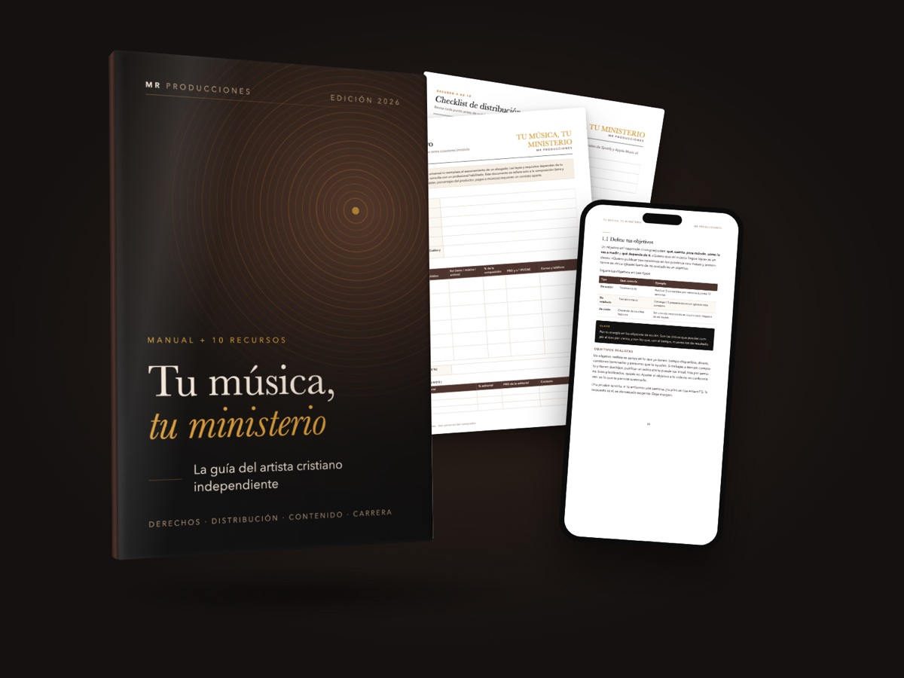
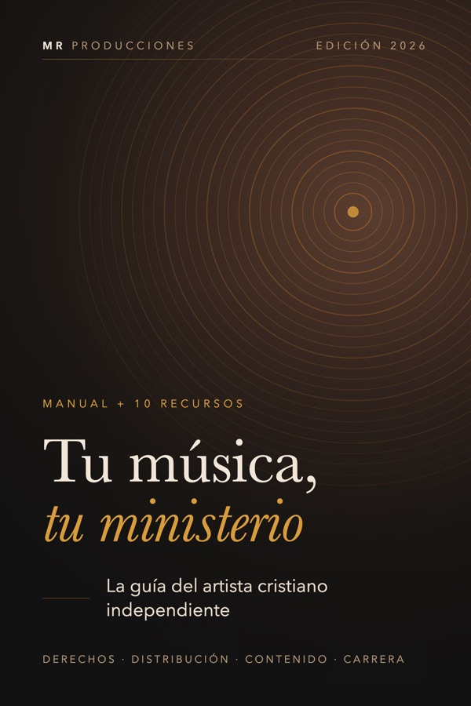

Organización del artista
Objetivos realistas, identidad, catálogo, single/EP/álbum, plan de lanzamiento y presupuesto.
config.js. Los botones de compra llevan, por ahora, a la sección de precio.Manual digital + 10 recursos editables
La guía del artista cristiano independiente.
Tu música tiene un mensaje. Aprende a desarrollar tu carrera musical, proteger tus canciones y llegar a más personas sin depender de una discográfica.
USD 29 · pago único · acceso digital

¿Te pasa algo de esto?
Tienes canciones, pero no sabes cómo lanzarlas. Están en notas de voz, en un cuaderno o en un disco duro, esperando el momento.
No entiendes bien los derechos de autor. Composición, grabación, regalías, editoriales… y no sabes qué te corresponde ni dónde registrarte.
No sabes cómo distribuir tu música. Distribuidoras, ISRC, metadatos, portadas: cada paso parece un riesgo.
Publicas en redes sin estrategia. Subes algo cuando puedes, pero no sabes qué grabar ni cómo hacer que te escuchen.
No consigues oportunidades. No sabes cómo presentarte ante una iglesia, un organizador o otro artista.
Tienes talento, pero no un sistema. Trabajas con el corazón, pero sin un plan que te permita avanzar mes a mes.
La solución
Tu música, tu ministerio es un manual digital pensado para cantantes, compositores y músicos cristianos hispanohablantes, con foco en Estados Unidos y útil también en Latinoamérica.
Te explica con lenguaje claro cómo funcionan los derechos de autor y las organizaciones de regalías en EE. UU., cómo distribuir una canción sin errores, cómo comunicar tu mensaje en redes y cómo planificar un año completo. Cada módulo termina en ejercicios y checklists para pasar de la idea a la acción.
Contenido
Objetivos realistas, identidad, catálogo, single/EP/álbum, plan de lanzamiento y presupuesto.
Composición vs. grabación, roles y derechos, colaboraciones, porcentajes, Split Sheet y U.S. Copyright Office.
ASCAP, BMI, The MLC, SoundExchange y la Copyright Office: qué hace cada una y por qué una no reemplaza a otra.
DistroKid, TuneCore, CD Baby, UnitedMasters, ISRC y UPC, metadatos, portadas y perfiles de artista.
Nombre, identidad visual, propuesta, biografías, fotos y redes coherentes.
Biblioteca de 100 ideas en 5 categorías y cómo producir con el celular y luz simple.
Calendario de 30 días, Reels, TikTok, Shorts, Meta Ads, Spotify for Artists, pitching y análisis.
EPK, cómo contactar iglesias y organizadores, colaboraciones y mensajes en español e inglés.
Fuentes de ingreso, presentaciones, servicios, productos digitales, presupuestos y reinversión.
Cuatro trimestres con acciones, publicaciones, lanzamientos, indicadores y evaluación.
Incluido
En Excel o Word para completar, y en PDF para imprimir. Las plantillas legales incluyen un aviso: son educativas y no reemplazan el asesoramiento de un profesional.

Para quién es
Que quieren lanzar su música de forma profesional.
Que necesitan proteger y registrar sus canciones.
Que quieren llevar las canciones de su iglesia más lejos.
Que sueñan con su propio proyecto.
Y quieren revisar derechos, registros y estrategia.
Y prefieren aprender el camino antes de cometer errores.
Quién está detrás
MR Producciones es un estudio de producción musical con base en Argentina que trabaja a distancia con artistas cristianos independientes, incluidos artistas hispanohablantes que viven en Estados Unidos.
Producimos, mezclamos y masterizamos canciones, y acompañamos a cada artista en la letra y en la orientación de lo que quiere comunicar. Esta guía reúne lo que todo artista independiente necesita saber antes y después de grabar: cómo cuidar su obra y cómo compartirla.
Acceso a la guía
Manual + 10 recursos editables
Preguntas frecuentes
No. La guía explica con detalle el sistema de EE. UU. (Copyright Office, ASCAP, BMI, The MLC y SoundExchange) porque es donde vive gran parte del público objetivo, pero la distribución, la marca, el contenido, los lanzamientos, las oportunidades y la planificación sirven en cualquier país. Si vives fuera de EE. UU., la guía te indica qué averiguar en tu país.
Sí. Está escrita en lenguaje claro, con ejemplos y ejercicios. No necesitas experiencia previa en la industria.
Sí. Te ayuda a revisar si tus canciones están bien registradas, si tus metadatos son consistentes, a ordenar tu catálogo y a planificar tus próximos lanzamientos.
La compra se procesa en Hotmart. Una vez confirmado el pago, recibes el acceso al material digital por los medios que indica la plataforma.
Sí. El manual está en PDF y se puede leer en celulares, tabletas y computadoras compatibles. Para completar las plantillas editables es más cómodo usar una computadora, aunque también puedes usar las versiones PDF para imprimir.
No. Los conceptos se explican desde cero. La guía es educativa y no reemplaza el asesoramiento de un abogado o contador para tu caso particular.
No. Nadie puede garantizar reproducciones, seguidores, ingresos ni ingreso a playlists. La guía te da conocimiento, herramientas y un plan de trabajo; los resultados dependen de muchos factores, como la calidad de tus canciones, tu constancia y tu público.
USD 29 · acceso digital · manual + 10 recursos